Radiation¶
Usually, radiation is something that can be propagated to infinity, which means, those wave that drops according to 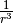 or even faster won’t get propagated to very far away. But we still might be interested in those near fields.
Understand retarded time is something always good for radiation study.

which means retarded time is the current time minus the travel time of the radiation.
The mathematical reason for this retardation is that the Green’s function for electromagnetic wave,

This is for the fields in vacuum. For radiation with source, the wave equations gains a source term. To solve the equation, I need to write down the Green’s function, which, in this case, has a retarded term in it. In fact all such waves have a retarded time in it even just by looking at the math. Retarded time has a great impact on the solution since it delays the effect of source.
This is also causality.
Radiation In General¶
In general the wave equation with a source is
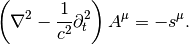
By solving that, the retarded solution comes into effect,
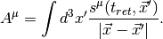
Here the vector potential is
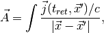
while the scalar potential is
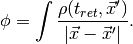
Static Fields
The static field has similar structure except we have no retardation. Here are the expressions.
The important thing in radiation is the angle depenence of radiation power or total radiation power. To find that, there are many procedures.
One of them is to use the fact that electric field in radiation is always transverse which means

So we only need to find out the magnetic field thus the first thing is to calculate the vector potential.
Why B field first?
We can also find out electric field first. But in dynamics,

which means we need to find both  and
and  .
.
While in the procedure stated previously, we only need .
To summarize, here is the procedure.
- Calculate .
- Find magnetic field using 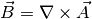.
- Find electric field is needed using 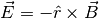.
- Find Poynting vector 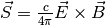.
- Find radiation power
 , which is angle dependent in general.
, which is angle dependent in general.
Zangwill’s Method
There is a radiation vector method in Zangwill’s Modern Electrodynamics book.
Dipole Radiation¶
Dipole Radiatioin Can Be Calculated Exactly.
Approximations¶
Since we are talking about radiation which is radiated away. Looking at a far zone radiation is good.
Define 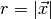. Expanding the vector potential, we have the multipole expansion of the vector potential in the limit that 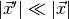 is all true for the whole integral,

So the vector potential under this degree of approximation can be splited into two terms at this point.

is the electric dipole.
Electric Dipole Radiation
The reason is the conservation of charge. Consider this relation,
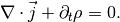
Combine this with the following trick,

and the fact that
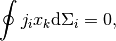
for any surface that is large enough.
We have the following relation

Then we know that

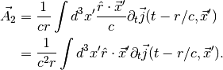
A trick can be applied to this expression,
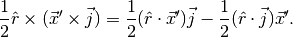
Recall that magnetic dipole is by definition
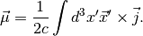
We would like to have a term similar to the electric dipole, but we have a term like 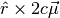 in  . So we take one step furthur.
. So we take one step furthur.

So the term becomes
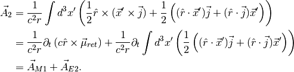
Back to the procedure to find radiation power, we can find the radiation power for a specific case.